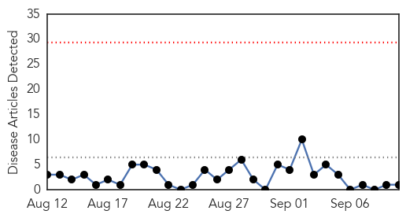
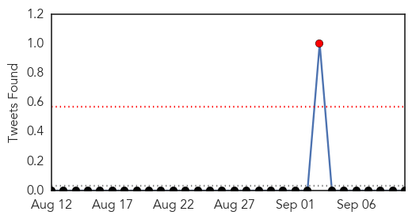
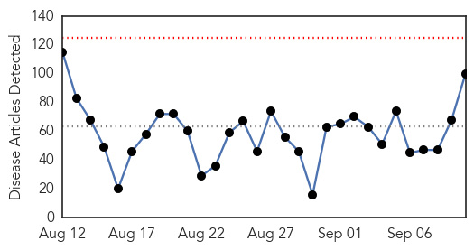
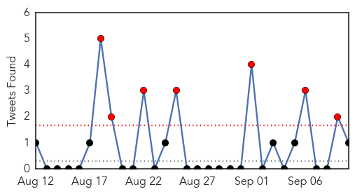
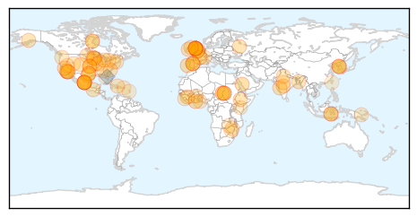

Hepatitis
30-Day Web Trend
0 alerts, 0 warnings

30-Day Twitter Trend
1 alerts, 0 warnings

Article Locations

Article Confidences
Top Articles:
Top Tweets:
-
No tweets found for Sep 10, 2015
Unknown
30-Day Web Trend
0 alerts, 0 warnings

30-Day Twitter Trend
7 alerts, 7 warnings

Article Locations
Article Confidences

Top Articles:
- 0.980
- PHE investigates outbreak of E.coli
- 0.979
- New study reveals breakthrough against Mers
- 0.969
- Napa County to begin offering free flu vaccines
- 0.965
- Second death linked to salmonella in cucumbers
- 0.939
- Childhood flu vaccination now available
- 0.922
- Second Death in Salmonella Outbreak in the US
- 0.914
- MERS victims file lawsuits against gov't, hospitals
- 0.912
- Second death linked to salmonella in cucumbers
- 0.910
- Legionnaires' death toll rises to 10 in western Illinois
- 0.910
- Second death reported in nationwide salmonella outbreak linked to cucumbers
- 0.906
- MERS victims file lawsuits against govt, hospitals – The Korea Times
- 0.903
- 'No new legionnaire's cases' in Greater Oporto
- 0.902
- Study shows popular molecular tests over diagnose C. difficile infections up to 50 percent
- 0.887
- Polio outbreak confirmed in Mali - WHO
- 0.882
- Minnesota Reports Outbreak of Salmonella Associated with Chipotle
- 0.873
- Salmonella-tainted cucumbers kill 2 people and sicken 339 others, CDC says
- 0.866
- PRESS DIGEST
- 0.866
- Outbreak of Salmonella cases associated with eating Chipotle in Minnesota - Story
- 0.857
- Ethiopia takes step to eliminate river blindness
- 0.850
- WHO calls for renewed efforts to eliminate tropical diseases in South East Asia
- 0.849
- 2nd Death Reported in Nationwide Salmonella Outbreak
- 0.846
- Chickens Genetically Modified to Resist Bird Flu
- 0.836
- More than 340 sickened in salmonella outbreak tied to cucumbers
- 0.834
- Nationwide salmonella outbreak linked to imported cucumbers
- 0.832
- Focus on neglected tropical diseases: WHO - World
- 0.831
- Alzheimer's may be a transmissible infection
- 0.829
- WHO focuses on neglected tropical diseases
- 0.829
- Second death in widespread salmonella outbreak reported in Texas
- 0.825
- Deadly ambush on humanitarian workers in Darfur
- 0.825
- Chiang Rai’s Public Health Office Works to Contain (HFMD) in Local Schools
- 0.824
- Two People Dead as Cucumber Salmonella Outbreak Worsens
- 0.824
- Two dead, 70 hospitalized in multi-state salmonella outbreak linked to cucumbers
- 0.805
- Salmonella cases linked to national outbreak
- 0.804
- TB vaccine may only be given to ‘at-risk’ children
- 0.799
- ​Countries urged to commit to eliminating tropical diseases
- 0.794
- Minnesota salmonella outbreak linked to Chipotle restaurants
- 0.789
- Rabies shots come with sticker shock
- 0.788
- 'Seeds' of Alzheimer's 'might be transferred on medical instruments'
- 0.767
- WHO calls for focus on neglected tropical diseases
- 0.767
- Legionnaires' disease outbreak at Veteran's Home doesn't keep vo
- 0.765
- Is Alzheimer's Disease Contagious? New Evidence Suggests It Could Be Transferred On Medical Instruments
- 0.747
- 'Seeds' of Alzheimer's might be transferred on medical instruments
- 0.746
- Alzheimer’s Disease Could Potentially Be Spread Through Surgery « CBS Atlanta
- 0.740
- Salmonella cases linked to national outbreak
- 0.739
- 2 dead, hundreds sick in cucumber-linked salmonella outbreak that reached Kansas
- 0.736
- 'Seeds' of Alzheimer's 'might be transferred on medical instruments'
- 0.735
- One Texas death linked to cucumber salmonella outbreak
- 0.734
- Second Death Confirmed from Tainted Cucumbers in Salmonella Outbreak Across 30 States; 341 Illnesses Thus Far
- 0.733
- Alzheimer's 'seeds' might be transferred
- 0.729
- The Caledonian-Record
Showing top 50 articles...
Top Tweets:
- 0.958
- RT: FLU SCAN: UK flu vaccine effectiveness, flu vaccine uptake and flu in elderly http://t.co/uWGhAC1KOT
- 0.553
- RT: Chicas, si van a poner foto de las tetas traten de que no les salga la papada.
- 0.526
- RT: üåûüå∏üçÉüå∏üçÉüå∏üçÉüå∏üçÉüå∏üçÉüå∏üåû BuenD√≠a Un alma buena, habita en un coraz√≥n feliz... FelizJueves‚Ķ
- 0.511
- RT: FelizJueves en nombre de Dios todo saldrá bien .....Amen
- 0.500
- RT: UnDiaComoHoy hace 11 años, se descubre la verdadera identidad de la Mona Lisa, esposa de Francesco de Giocondo, Lissa de Gia…